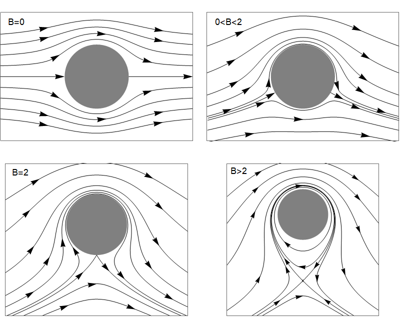

9. A paradox¶
Big idea: We can’t have lift without drag Here we model the flow past a cylinder as an inviscid, potential flow. By artificially introducing circulation into the flow, we find that we can obtain a lift force without the presence of drag. This gives us insight to suggest that if an airfoil is very well designed to avoid dramatic boundary layer separation, then very low drag forces may indeed be obtained.
The cylinder can be mapped via a change of variables (called “conformal mapping”) to derive results for a flat plate or a cambered airfoil. The streamline patterns look similar to what we see here.
9.1. Incompressible potential flow past a cylinder¶
From the incompressibility condition \(\nabla.\underline{v}=0\) together with the equation for potential flow \(\underline{v}=\nabla\phi\) we obtain Laplace’s equation:
In cylindrical polars:
You may verify that the following result satisfies this equation, where \(\Gamma\) is an arbitrary constant representing the circulation, and \(U\) is the free stream velocity:
The velocity components \(\left(v_r,v_{\theta}\right)=\left(\frac{\partial\phi}{\partial r},\frac{1}{r}\frac{\partial\phi}{\partial\theta}\right)\) are
Warning
Notice that for this solution there is evidently slip on the surface of the cylinder, since \(v_{\theta}(r=a)=-2U\sin(\theta)+\frac{\Gamma}{2\pi a}\).
The pattern of streamlines depends on the circulation \(\Gamma\). If \(\Gamma=0\) then the flow is symmetric, as shown in the top-left figure below, with stagnation points at the fore and aft of the cylinder. As the circulation in the clockwise direction increases, the stagnation points move towards the underside of the cylinder. Eventually, as the circulation is increased still further, the stagnation points coalesce and then move off the surface of the cylinder. The location of the stagnation points can be calculated:

{kind=link}
9.1.1. Bernoulli’s theorem:¶
Since the cylinder is a streamline, and the motion is steady, \(\frac{p}{\rho}+\frac{1}{2} v^2\) is constant on \(r=a\). Therefore on the surface of the cylinder
The pressure distribution is symmetric in the \(y\)-axis, so the net force must be perpendicular to the oncoming stream. The \(y\)-component of the force is \(-p a\sin(\theta)\mathrm{d}\theta\), so the net force is:
We therefore obtain a lift force if there is positive circulation. The fact that there is no net force in the downstream direction (no drag) is known as D’Alembert’s paradox.
9.1.2. Resolving the paradox¶
The circulation has been artificially introduced here. There is nothing in the physical setup of this problem that would explain where it comes from. In reality, circulation can arise for a cylinder that is rotating relative to the oncoming stream or for an airfoil with a sharp trailing edge that attacks the oncoming flow an angle. Viscosity is essential. In each case it is the separation of the viscous boundary layer that generates the circulation via vortex shedding. In the case of a cambered airfoil we see a “starting vortex” created around the trailing edge, which eventually breaks away and sets up an opposing circulation around the airfoil, as shown below.

In cases where the development of the starting vortex does not have a preferred direction, such as for a non-rotating cylinder placed in an oncoming stream, we may see a Von Karman street of alternating vortices being shed from the cylinder.
Exercise 9.1
Look up the meaning of the term “stall” in the context of fluid dynamics, and provide a description of this term in your own words. Draw pictures to illustrate.